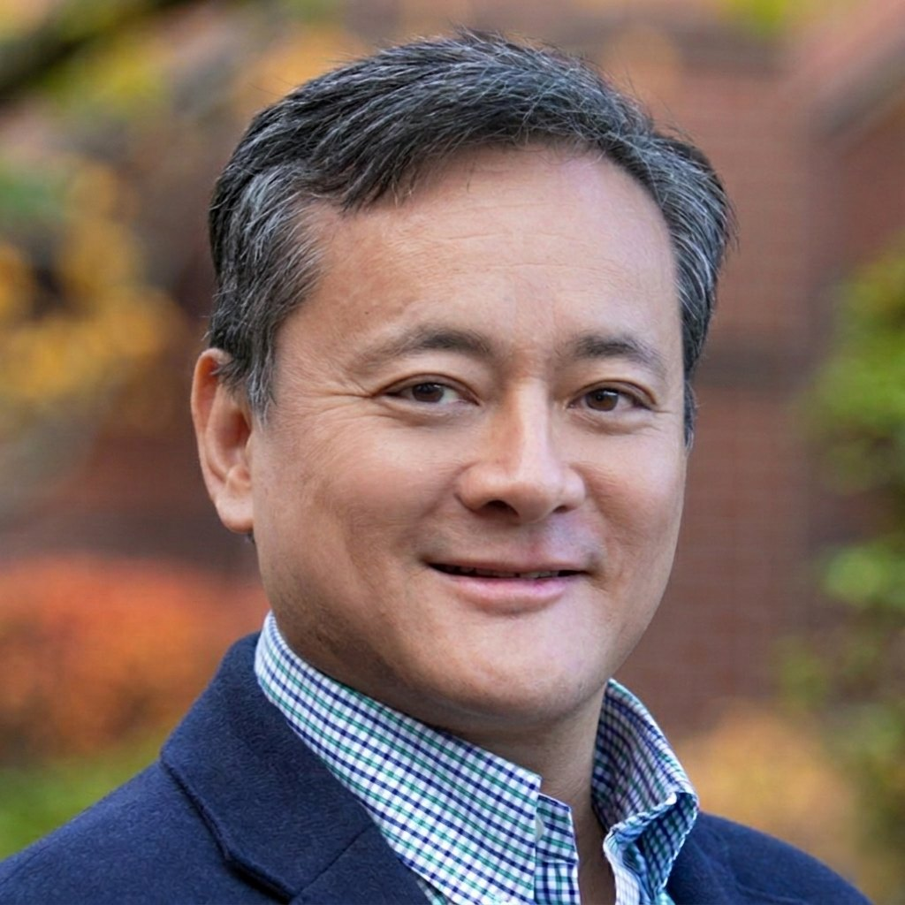

Integrity in business
Students study real cases where companies put profit ahead of people, so they are ready for the ethical choices they will face at work.
Inaugural Dean, College of Business and Technology
Seattle Pacific University
Business executive, engineer, and academic leader. An inventor on seven U.S. patents who began his career at Bell Labs, then spent more than fifteen years leading sales, marketing, and business development for technology companies. Now dean of a multidisciplinary college that brings business and technology together.

Business and technology now shape nearly every career. Dr. Yeh’s aim is to graduate people who can do both well, and who lead with integrity when the choices get hard.
“We’re able to train future leaders who will help people flourish and have firms that create value in society.”
Dr. James Yeh, in SPU Stories, December 2025
Students study real cases where companies put profit ahead of people, so they are ready for the ethical choices they will face at work.
Engineers who understand markets and business leaders who understand technology, learning side by side.
Hands-on projects and employer partnerships, shaped by his own two decades in industry.
Business and technology that serve people and communities, taught in the tradition of Christian higher education during some of the most formative years of students’ lives.
Across three institutions he has brought together faculty, disciplines, and outside partners to build new programs, lead accreditation, and secure external funding. Since September 2025 he has served as the first dean of Seattle Pacific’s newly unified College of Business and Technology, where his current work includes:
In March 2026 he brought together the faculty of the college’s two divisions, the Division of Business and Government and the Division of Technology, to write and approve a shared mission for the new college:
“Grounded in Christian faith and values, we cultivate resilient leaders who advance flourishing through service in business, technology, and civil society.”
Leading development of new graduate programs at the intersection of business and technology, in fields where employers are actively hiring.
Led the creation and expansion of combined BS+MS routes from computer science, data science, business, and accounting into graduate data analytics.
Chairs the University Artificial Intelligence and Ethics Working Group, shaping campus-wide AI policy, curriculum, and faculty development.
Oversees the Center for Applied Learning and the Center for Faithful Business, connecting students with real projects and external partners.
Builds relationships with corporations, alumni, and donors, and sets the college’s budget and investment priorities.
Supports faculty scholarship and development, and oversees assessment and AACSB and ABET accreditation.
At Seattle Pacific’s 20th annual Social Venture Plan Competition, Dr. Yeh presented the $10,000 grand prize to ReForged Connections, a student plan to train formerly incarcerated women for careers in the skilled trades.
Dr. Yeh on teaching students to lead with integrity and connecting faith and innovation in Seattle’s tech hub.
Seattle Pacific announces his appointment to lead the College of Business and Technology.
As Associate Dean of Engineering, Dr. Yeh serves on the steering committee for a new early college partnership that gives high school students a head start on college.
James Hsi-Jen Yeh is the inaugural Dean of the College of Business and Technology at Seattle Pacific University, a newly unified college where he leads eight departments and 34 full-time faculty in business, engineering, computing, data science, mathematics, physics, and design. He came to the role after more than twenty years in industry and a decade in higher education, and his career has moved between the lab, the market, and the classroom.
His industry career spanned telecommunications, semiconductors, and biometrics. In Taiwan he led a networking business unit and secured and deployed a region-wide broadband network. At AuthenTec, later acquired by Apple, he was Senior Director of Marketing and Taiwan Country Manager, growing a profitable semiconductor module business for global mobile manufacturers. At Synaptics he took fingerprint-authentication products from concept through production with Samsung, Dell, Lenovo, Intel, and Qualcomm. As an investment manager, he evaluated early-stage technology companies and advised financial institutions on telecommunications investments.
That business career rests on deep technical work. His first research, as a Caltech undergraduate, applied volume holography to artificial neural networks. At UC Berkeley he invented fluidic self-assembly, a technique in which precisely shaped semiconductor devices suspended in liquid settle into matching recesses on a silicon wafer; it became the basis of five U.S. patents. At AT&T Bell Laboratories he designed a dual-band low-noise amplifier for wireless receivers and developed dynamic quality-of-service and pricing for communication networks. He has kept building since, from embedded software for a defense radar program to student research on Internet of Things health monitoring and pico-hydroelectric power for remote Himalayan villages, work that earned an IEEE Best Paper Award.
His academic career began at Cal Poly Pomona, where he taught engineering and mentored student design teams. He then spent eight years as Chair of Engineering and Computer Science at Azusa Pacific University, where he led ABET accreditation, won National Science Foundation funding to support first-generation STEM students, and secured a W. M. Keck Foundation research grant. He went on to serve as the inaugural Associate Dean of the School of Engineering at Massachusetts Maritime Academy, where he served on the steering committee for a new early college partnership with a local high school. At Seattle Pacific he is building programs that pair technical depth with business judgment, developed alongside the employers who hire their graduates.
He is fluent in English, Mandarin Chinese, and Taiwanese, and conversational in Spanish and Japanese. In 1999 he starred as “Dr. Yeh” in a U.S. television commercial for Pert Plus shampoo, filmed in Las Vegas. Watch the commercial.
A career that has repeatedly crossed boundaries: from research to industry, investment, and commercialization, then to teaching, department leadership, and now leading a multidisciplinary college.
University of California, Berkeley
Doctoral research in MEMS, semiconductor devices, and optoelectronics. Invented fluidic self-assembly for heterogeneous semiconductor integration.
AT&T Bell Laboratories, Murray Hill, NJ
Research in RF systems, optical communications, and wireless networking. Invented a dual-band low-noise amplifier, along with systems for dynamic bandwidth allocation and quality of service.
Tecom Company Ltd., Taipei
Led the Carrier Networking business unit and global carrier partnerships. Secured and deployed a $33M DSL network and brought ADSL, VoIP, and wireless products to market.
WK Consulting and independent practice, Santa Clara and Taipei
Evaluated early-stage technology companies for investment and advised financial institutions on telecommunications investments, broadband deployment, and cybersecurity.
AuthenTec, Inc. (acquired by Apple)
Led marketing, international business, and strategic partnerships. Built a profitable semiconductor module business for global mobile manufacturers, working with Samsung, Microsoft, Sony Ericsson, LG, HTC, and Fujitsu.
Synaptics, Inc. (formerly Validity Sensors), San Jose
Led business development and commercialization of fingerprint authentication for smartphones and PCs, coordinating engineering, manufacturing, and marketing on programs with Samsung, HTC, Dell, Lenovo, Intel, and Qualcomm.
California State Polytechnic University, Pomona
Taught engineering and engineering technology and mentored student design teams.
Azusa Pacific University
Achieved ABET accreditation, established mechanical and electrical engineering concentrations, led the creation of 4+1 pathways, and served as an NSF review panelist.
Microwave Products and Technology, Murrieta, CA
Wrote embedded software for a defense radar antenna program and contributed to synthetic aperture radar and drone vibration mitigation.
Massachusetts Maritime Academy
First associate dean of the School of Engineering. Led three engineering departments, planned the engineering curriculum for a new $330 million training ship, initiated Environmental Engineering and Engineering Technology degrees, and restarted a renewable-energy field program in Costa Rica.
Seattle Pacific University
First dean of the newly unified college. Leads eight departments spanning engineering, computing, data science, mathematics, physics, design, and business.
Work that starts with a device or an idea and ends with something people use and pay for.
Seven U.S. patents and 27 publications, 1987 to 2024.
Sensor-Integrated Chairs for Lower Body Strength and Endurance Assessment
An IoT-Based Automatic and Continuous Urine Measurement System
Real-Time Monitoring of Urine Output with Internet-of-Things Connected Foley Catheters
Prioritized Load Control System for Pico-Hydroelectric Power in the Nepal Himalayas
Environmentally Embedded Internet-of-Things for Secondary and Higher Education
IoT Sensing and Control Network for Pico-Hydroelectric in the Nepal Himalayas
Modular Pico-Hydro Power System for Remote Himalayan Villages
Programmable Turbine Failsafe System for Pico-Hydroelectric Power in the Nepal Himalayas
IoT Enabled Pico-Hydroelectric Power with Satellite Backhaul for Remote Himalayan Villages
Modular Pico-Hydropower System for Remote Himalayan Villages
Improving the Utilization Factor for Islanded Renewable Energy Systems
Sustainability as a Characteristic of Renewable Energy Systems in Remote Himalayan Villages
Always in Touch: GSM-WAVE
Ultra High Density Near-Field Optical Storage
Fluidic Self-Assembly for the Integration of GaAs Light-Emitting Diodes on Si Substrates
New Fabrication Technique for the Integration of Large Area Optoelectronic Display Panels
InGaAs and GaAs p-i-n Photodetectors Integrated onto a Si Substrate by Fluidic Self-Assembly
Gallium Arsenide on Silicon Integration by Fluidic Self-Assembly
Integration of GaAs Vertical-Cavity Surface-Emitting Laser on Si by Substrate Removal
Fluidic Self-Assembly of Microstructures and Its Application to the Integration of GaAs on Si
Electrical and Optical Characteristics of Vacuum-Sealed Polysilicon Microlamps
Applying Volume Holography to Artificial Neural Networks
Things he builds for fun, and to show students what a few lines of code can do.
Interactive 3D simulations of two kinds of atoms moving and colliding, built in Processing and hosted on OpenProcessing.
Wrote the original circuit-to-Verilog translator for CircuitVerse, the free online digital logic simulator, building it out from a placeholder in the codebase. It converts a circuit drawn in the browser into Verilog, the hardware description language used to design real chips.
To try it, open the CircuitVerse simulator, build a circuit, and choose Tools, then Export Verilog.
Students, faculty, alumni, and industry and community partners are welcome to reach out. Email is the best way to reach him about speaking, partnerships, or the college.
contact@drjyeh.com